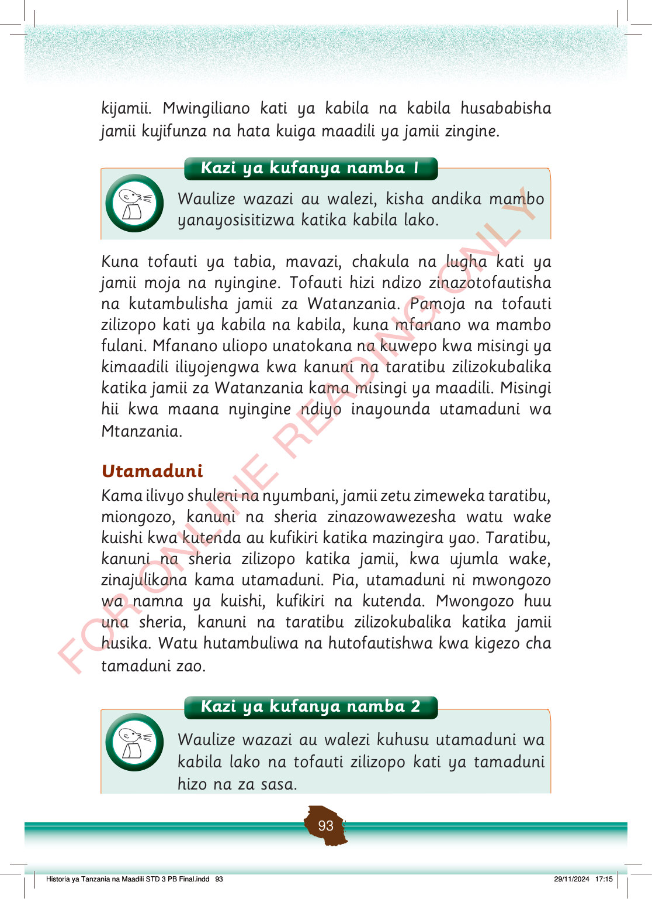

kijamii.
Mwingiliano kati ya kabila na kabila husababisha jamii kujifunza na hata kuiga maadili ya jamii zingine.
Kuna tofauti ya tabia, mavazi, chakula na lugha kati ya jamii moja na nyingine.
Tofauti hizi ndizo zinazotofautisha na kutambulisha jamii za Watanzania.
Pamoja na tofauti zilizopo kati ya kabila na kabila, kuna mfanano wa mambo fulani.
Mfanano uliopo unatokana na kuwepo kwa misingi ya kimaadili iliyojengwa kwa kanuni na taratibu zilizokubalika katika jamii za Watanzania kama misingi ya maadili.
Misingi hii kwa maana nyingine ndiyo inayounda utamaduni wa Mtanzania.
Utamaduni
Kama ilivyo shuleni na nyumbani, jamii zetu zimeweka taratibu, miongozo, kanuni na sheria zinazowawezesha watu wake kuishi kwa kutenda au kufikiri katika mazingira yao.
Taratibu, kanuni na sheria zilizopo katika jamii, kwa ujumla wake, zinajulikana kama utamaduni.
Pia, utamaduni ni mwongozo wa namna ya kuishi, kufikiri na kutenda.
Mwongozo huu una sheria, kanuni na taratibu zilizokubalika katika jamii husika.
Watu hutambuliwa na hutofautishwa kwa kigezo cha tamaduni zao.
Historia ya Tanzania na Maadili STD 3 PB Final.indd 93
29/11/2024 17:15
Kazi ya kufanya namba 1
Kazi ya kufanya namba 1: Waulize wazazi au walezi, kisha andika mambo yanayosisitizwa katika kabila lako.
Waulize wazazi au walezi, kisha andika mambo yanayosisitizwa katika kabila lako.
Kazi ya kufanya namba 2
Kazi ya kufanya namba 2: Waulize wazazi au walezi kuhusu utamaduni wa kabila lako na tofauti zilizopo kati ya utamaduni huo na wa sasa.
Waulize wazazi au walezi kuhusu utamaduni wa kabila lako na tofauti zilizopo kati ya tamaduni hizo na za sasa.